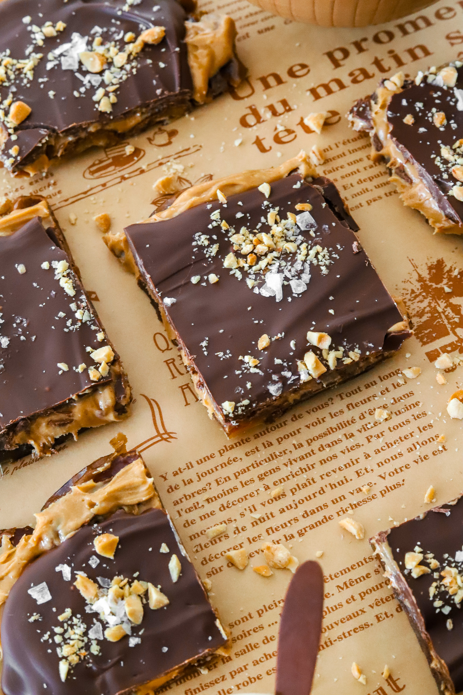

MORIBYAN

DESSERT
DATE BARK
PREP TIME: 10 MINUTES
TOTAL TIME: 45 MINUTES
YIELDS: 12 PIECES
Craving a sweet treat but also something a bit more healthy? Try
making date bark! It tastes exactly like a Snickers bar but without
the refined sugar. These are also great for meal prep!
JUMP TO RECIPE

DESSERT
DATE BARK
Craving a sweet treat but also something a bit more healthy? Try
making date bark! It tastes exactly like a Snickers bar but without
the refined sugar. These are also great for meal prep!
PRINT RECIPE
PIN RECIPE
PREP TIME: 10 MINUTES
TOTAL TIME: 45 MINUTES
YIELDS: 12 PIECES
INGREDIENTS
- 12 oz package Medjool Date
- 1/2 cup peanut butter, thick and creamy
- 1/2 cup melted semi-sweet, milk, or dark chocolate
- 1/4 cup chopped peanuts
- flakey sea salt, to taste
INSTRUCTIONS
-
Line a baking tray with parchment paper.
-
Cut the Medjool dates open down the middle and remove the pit.
-
Press the Medjool date down on the parchment paper, with the
inside facing down. Repeat with the rest of the dates making
sure they are tightly packed side by side.
-
Spread on a thin layer of peanut butter on top. You can pop it
in the fridge at this step or just continue to the next step.
-
Add the chocolate to a microwave-safe bowl and heat in 30-second
intervals on low power. Mix between each interval until fully
melted.
-
Pour the chocolate over the peanut butter and use the back of a
spoon or rubber spatula to spread it into a thin layer.
-
Sprinkle on chopped peanuts and flakey sea salt.
-
Transfer to the fridge for 20 to 30 minutes until the chocolate
is set and firm to touch.
-
Remove from the fridge and transfer to a cutting board.
-
Cut the bark into equal sections. You can make the squares as
small or as big as you'd like.
-
Enjoy now or store in an air-tight container in the fridge!
TIPS & NOTES
You can make the date bark as large or as small as you like
depending how many dates you spread out.
The measurements are also estimates, feel free to use as much or as
little of every ingredient as you'd like.